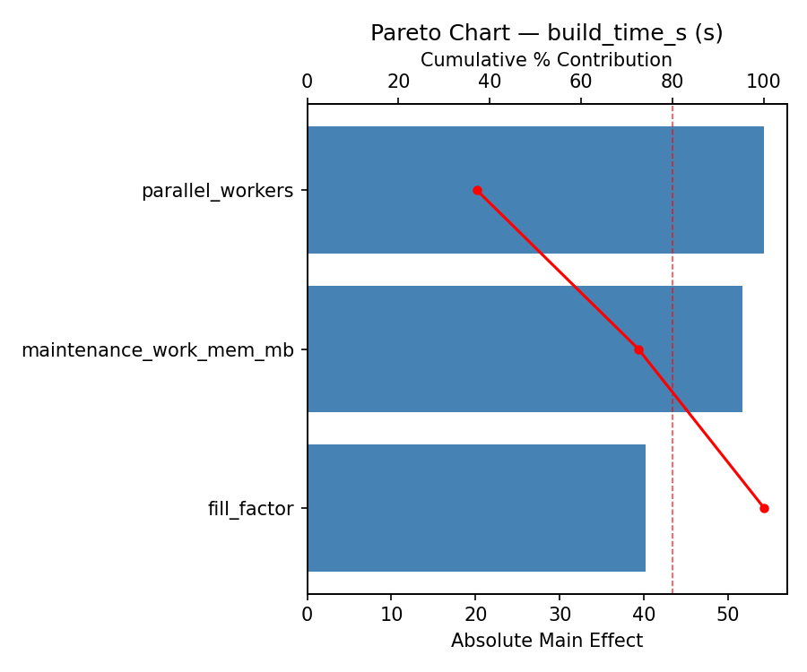
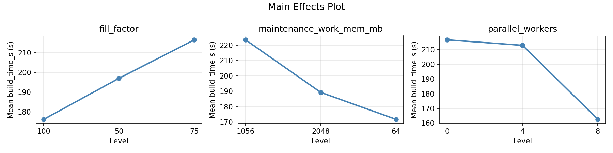
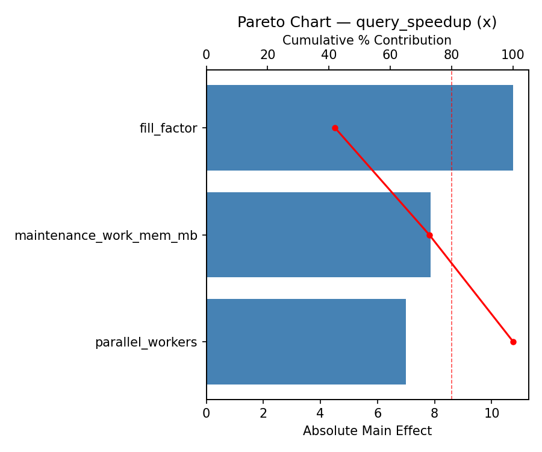
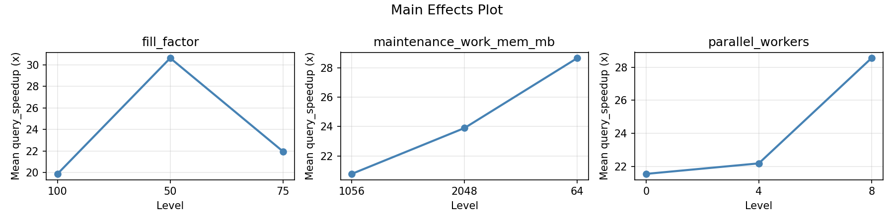
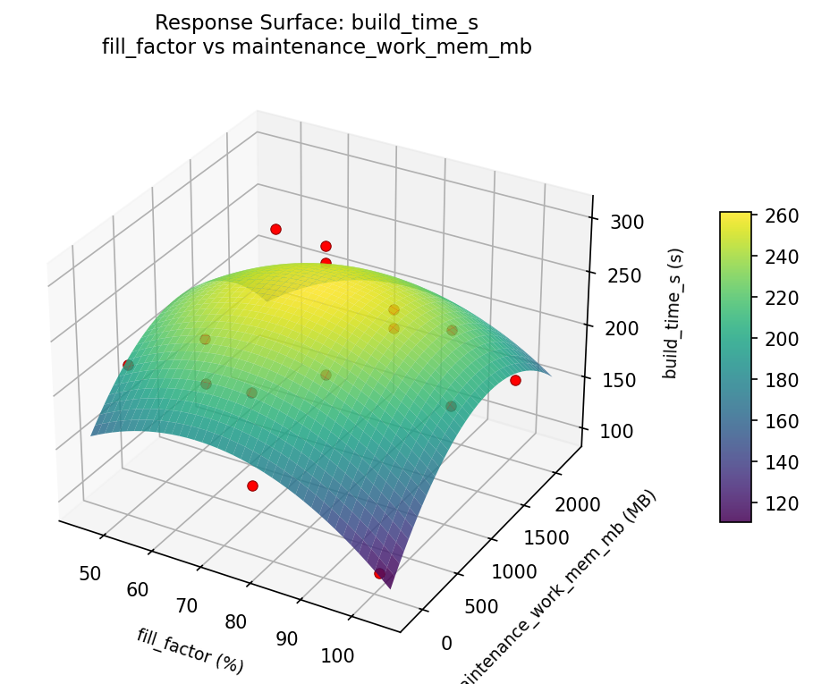
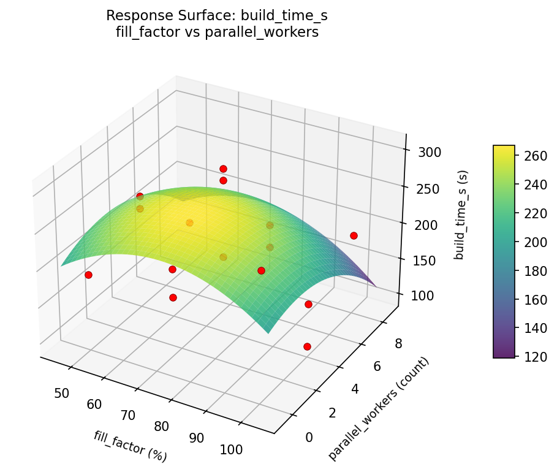
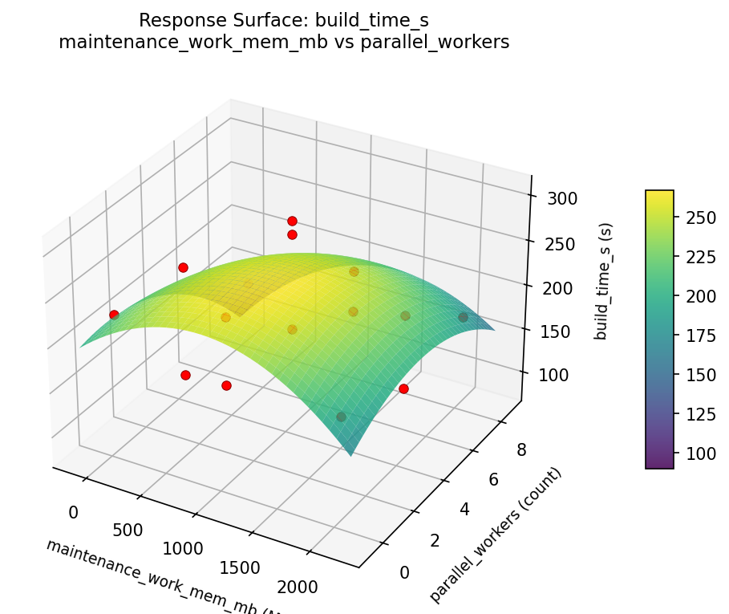
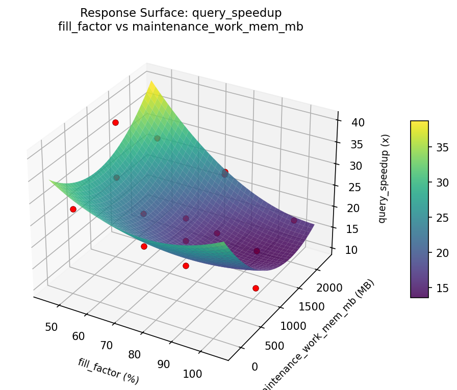
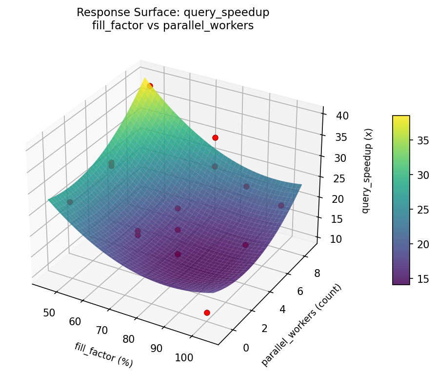
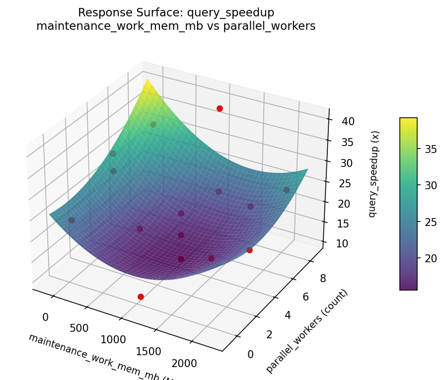

Summary
This experiment investigates index selection optimization. Box-Behnken design optimizing index fill factor, page size, and parallel workers for throughput.
The design varies 3 factors: fill factor (%), ranging from 50 to 100, maintenance work mem mb (MB), ranging from 64 to 2048, and parallel workers (count), ranging from 0 to 8. The goal is to optimize 2 responses: build time s (s) (minimize) and query speedup (x) (maximize). Fixed conditions held constant across all runs include table rows = 50000000, index type = btree.
A Box-Behnken design was chosen because it efficiently fits quadratic models with 3 continuous factors while avoiding extreme corner combinations — requiring only 15 runs instead of the 8 needed for a full factorial at two levels.
Quadratic response surface models were fitted to capture potential curvature and factor interactions. The RSM contour plots below visualize how pairs of factors jointly affect each response.
Key Findings
For build time s, the most influential factors were fill factor (38.7%), parallel workers (36.5%), maintenance work mem mb (24.8%). The best observed value was 97.0 (at fill factor = 100, maintenance work mem mb = 1056, parallel workers = 8).
For query speedup, the most influential factors were parallel workers (56.9%), fill factor (34.5%), maintenance work mem mb (8.6%). The best observed value was 39.5 (at fill factor = 50, maintenance work mem mb = 2048, parallel workers = 4).
Recommended Next Steps
- Run confirmation experiments at the predicted optimal settings to validate the model.
- Consider whether any fixed factors should be varied in a future study.
Experimental Setup
Factors
| Factor | Low | High | Unit |
|---|
fill_factor | 50 | 100 | % |
maintenance_work_mem_mb | 64 | 2048 | MB |
parallel_workers | 0 | 8 | count |
Fixed: table_rows = 50000000, index_type = btree
Responses
| Response | Direction | Unit |
|---|
build_time_s | ↓ minimize | s |
query_speedup | ↑ maximize | x |
Configuration
{
"metadata": {
"name": "Index Selection Optimization",
"description": "Box-Behnken design optimizing index fill factor, page size, and parallel workers for throughput"
},
"factors": [
{
"name": "fill_factor",
"levels": [
"50",
"100"
],
"type": "continuous",
"unit": "%"
},
{
"name": "maintenance_work_mem_mb",
"levels": [
"64",
"2048"
],
"type": "continuous",
"unit": "MB"
},
{
"name": "parallel_workers",
"levels": [
"0",
"8"
],
"type": "continuous",
"unit": "count"
}
],
"fixed_factors": {
"table_rows": "50000000",
"index_type": "btree"
},
"responses": [
{
"name": "build_time_s",
"optimize": "minimize",
"unit": "s"
},
{
"name": "query_speedup",
"optimize": "maximize",
"unit": "x"
}
],
"settings": {
"operation": "box_behnken",
"test_script": "use_cases/43_index_selection_optimization/sim.sh"
}
}
Experimental Matrix
The Box-Behnken Design produces 15 runs. Each row is one experiment with specific factor settings.
| Run | fill_factor | maintenance_work_mem_mb | parallel_workers |
|---|
| 1 | 75 | 64 | 0 |
| 2 | 75 | 1056 | 4 |
| 3 | 100 | 1056 | 8 |
| 4 | 100 | 1056 | 0 |
| 5 | 75 | 1056 | 4 |
| 6 | 75 | 1056 | 4 |
| 7 | 50 | 1056 | 8 |
| 8 | 100 | 64 | 4 |
| 9 | 75 | 64 | 8 |
| 10 | 100 | 2048 | 4 |
| 11 | 50 | 1056 | 0 |
| 12 | 75 | 2048 | 8 |
| 13 | 50 | 64 | 4 |
| 14 | 50 | 2048 | 4 |
| 15 | 75 | 2048 | 0 |
Step-by-Step Workflow
1
Preview the design
$ python doe.py info --config use_cases/43_index_selection_optimization/config.json
2
Generate the runner script
$ python doe.py generate --config use_cases/43_index_selection_optimization/config.json \
--output use_cases/43_index_selection_optimization/results/run.sh --seed 42
3
Execute the experiments
$ bash use_cases/43_index_selection_optimization/results/run.sh
4
Analyze results
$ python doe.py analyze --config use_cases/43_index_selection_optimization/config.json
5
Get optimization recommendations
$ python doe.py optimize --config use_cases/43_index_selection_optimization/config.json
6
Multi-objective optimization
With 2 competing responses, use --multi to find the best compromise via Derringer–Suich desirability.
$ python doe.py optimize --config use_cases/43_index_selection_optimization/config.json --multi
7
Generate the HTML report
$ python doe.py report --config use_cases/43_index_selection_optimization/config.json \
--output use_cases/43_index_selection_optimization/results/report.html
Features Exercised
| Feature | Value |
|---|
| Design type | box_behnken |
| Factor types | continuous (all 3) |
| Arg style | double-dash |
| Responses | 2 (build_time_s ↓, query_speedup ↑) |
| Total runs | 15 |
Analysis Results
Generated from actual experiment runs using the DOE Helper Tool.
Response: build_time_s
Top factors: fill_factor (38.7%), parallel_workers (36.5%), maintenance_work_mem_mb (24.8%).
Pareto Chart

Main Effects Plot

Response: query_speedup
Top factors: parallel_workers (56.9%), fill_factor (34.5%), maintenance_work_mem_mb (8.6%).
Pareto Chart

Main Effects Plot

Response Surface Plots
3D surfaces fitted with quadratic RSM. Red dots are observed data points.
build time s fill factor vs maintenance work mem mb

build time s fill factor vs parallel workers

build time s maintenance work mem mb vs parallel workers

query speedup fill factor vs maintenance work mem mb

query speedup fill factor vs parallel workers

query speedup maintenance work mem mb vs parallel workers

Multi-Objective Optimization
When responses compete, Derringer–Suich desirability finds the best compromise.
Each response is scaled to a 0–1 desirability, then combined via a weighted geometric mean.
Overall Desirability
D = 0.8664
Per-Response Desirability
| Response | Weight | Desirability | Predicted | Dir |
|---|
build_time_s |
1.0 |
|
144.00 0.7491 144.00 s |
↓ |
query_speedup |
1.5 |
|
39.50 0.9545 39.50 x |
↑ |
Recommended Settings
| Factor | Value |
|---|
fill_factor | 75 % |
maintenance_work_mem_mb | 64 MB |
parallel_workers | 8 count |
Source: from observed run #3
Trade-off Summary
Sacrifice = how much worse than single-objective best.
| Response | Predicted | Best Observed | Sacrifice |
|---|
query_speedup | 39.50 | 39.50 | +0.00 |
Top 3 Runs by Desirability
| Run | D | Factor Settings |
|---|
| #12 | 0.8014 | fill_factor=50, maintenance_work_mem_mb=1056, parallel_workers=8 |
| #10 | 0.7210 | fill_factor=50, maintenance_work_mem_mb=1056, parallel_workers=0 |
Model Quality
| Response | R² | Type |
|---|
query_speedup | 0.6275 | linear |
Full Multi-Objective Output
============================================================
MULTI-OBJECTIVE OPTIMIZATION
Method: Derringer-Suich Desirability Function
============================================================
Overall desirability: D = 0.8664
Response Weight Desirability Predicted Direction
---------------------------------------------------------------------
build_time_s 1.0 0.7491 144.00 s ↓
query_speedup 1.5 0.9545 39.50 x ↑
Recommended settings:
fill_factor = 75 %
maintenance_work_mem_mb = 64 MB
parallel_workers = 8 count
(from observed run #3)
Trade-off summary:
build_time_s: 144.00 (best observed: 97.00, sacrifice: +47.00)
query_speedup: 39.50 (best observed: 39.50, sacrifice: +0.00)
Model quality:
build_time_s: R² = 0.3902 (linear)
query_speedup: R² = 0.6275 (linear)
Top 3 observed runs by overall desirability:
1. Run #3 (D=0.8664): fill_factor=75, maintenance_work_mem_mb=64, parallel_workers=8
2. Run #12 (D=0.8014): fill_factor=50, maintenance_work_mem_mb=1056, parallel_workers=8
3. Run #10 (D=0.7210): fill_factor=50, maintenance_work_mem_mb=1056, parallel_workers=0
Full Analysis Output
=== Main Effects: build_time_s ===
Factor Effect Std Error % Contribution
--------------------------------------------------------------
fill_factor 43.7857 14.7512 38.7%
parallel_workers 41.2143 14.7512 36.5%
maintenance_work_mem_mb 28.0000 14.7512 24.8%
=== ANOVA Table: build_time_s ===
Source DF SS MS F p-value
-----------------------------------------------------------------------------
fill_factor 2 5869.3048 2934.6524 0.578 0.5828
maintenance_work_mem_mb 2 1568.8048 784.4024 0.155 0.8593
parallel_workers 2 4346.3048 2173.1524 0.428 0.6658
Lack of Fit 6 23758.6524 3959.7754 0.780 0.6561
Pure Error 2 10152.6667 5076.3333
Error 8 33911.3190 5076.3333
Total 14 45695.7333 3263.9810
=== Summary Statistics: build_time_s ===
fill_factor:
Level N Mean Std Min Max
------------------------------------------------------------
100 4 214.0000 61.1555 173.0000 305.0000
50 4 223.5000 54.8057 156.0000 290.0000
75 7 179.7143 57.1481 97.0000 261.0000
maintenance_work_mem_mb:
Level N Mean Std Min Max
------------------------------------------------------------
1056 7 200.2857 78.4256 97.0000 305.0000
2048 4 214.7500 34.1602 187.0000 261.0000
64 4 186.7500 35.2266 142.0000 228.0000
parallel_workers:
Level N Mean Std Min Max
------------------------------------------------------------
0 4 198.5000 73.9301 142.0000 305.0000
4 7 186.2857 50.3842 97.0000 237.0000
8 4 227.5000 56.9239 173.0000 290.0000
=== Main Effects: query_speedup ===
Factor Effect Std Error % Contribution
--------------------------------------------------------------
parallel_workers 11.3500 2.0367 56.9%
fill_factor 6.8786 2.0367 34.5%
maintenance_work_mem_mb 1.7250 2.0367 8.6%
=== ANOVA Table: query_speedup ===
Source DF SS MS F p-value
-----------------------------------------------------------------------------
fill_factor 2 141.4630 70.7315 2.220 0.1710
maintenance_work_mem_mb 2 8.3898 4.1949 0.132 0.8785
parallel_workers 2 333.2398 166.6199 5.229 0.0353
Lack of Fit 6 324.2780 54.0463 1.696 0.4162
Pure Error 2 63.7267 31.8633
Error 8 388.0046 31.8633
Total 14 871.0973 62.2212
=== Summary Statistics: query_speedup ===
fill_factor:
Level N Mean Std Min Max
------------------------------------------------------------
100 4 21.7500 4.6379 16.7000 26.9000
50 4 20.0500 7.3813 10.7000 27.6000
75 7 26.9286 9.1438 10.5000 39.5000
maintenance_work_mem_mb:
Level N Mean Std Min Max
------------------------------------------------------------
1056 7 24.2000 9.8934 10.7000 39.5000
2048 4 22.4750 8.0649 10.5000 27.6000
64 4 24.1000 5.1737 19.2000 31.3000
parallel_workers:
Level N Mean Std Min Max
------------------------------------------------------------
0 4 22.7250 6.7549 16.7000 31.3000
4 7 28.2000 6.3545 19.2000 39.5000
8 4 16.8500 7.2730 10.5000 24.2000
Optimization Recommendations
=== Optimization: build_time_s ===
Direction: minimize
Best observed run: #12
fill_factor = 100
maintenance_work_mem_mb = 1056
parallel_workers = 8
Value: 97.0
RSM Model (linear, R² = 0.0248, Adj R² = -0.2411):
Coefficients:
intercept +200.5333
fill_factor -9.2500
maintenance_work_mem_mb -7.5000
parallel_workers -0.2500
RSM Model (quadratic, R² = 0.2802, Adj R² = -1.0155):
Coefficients:
intercept +207.6667
fill_factor -9.2500
maintenance_work_mem_mb -7.5000
parallel_workers -0.2500
fill_factor*maintenance_work_mem_mb +19.7500
fill_factor*parallel_workers -33.7500
maintenance_work_mem_mb*parallel_workers +26.7500
fill_factor^2 -24.4583
maintenance_work_mem_mb^2 +2.0417
parallel_workers^2 +9.0417
Curvature analysis:
fill_factor coef=-24.4583 concave (has a maximum)
parallel_workers coef=+9.0417 convex (has a minimum)
maintenance_work_mem_mb coef=+2.0417 convex (has a minimum)
Notable interactions:
fill_factor*parallel_workers coef=-33.7500 (antagonistic)
maintenance_work_mem_mb*parallel_workers coef=+26.7500 (synergistic)
fill_factor*maintenance_work_mem_mb coef=+19.7500 (synergistic)
Predicted optimum (from linear model, at observed points):
fill_factor = 50
maintenance_work_mem_mb = 64
parallel_workers = 4
Predicted value: 217.2833
Surface optimum (via L-BFGS-B, linear model):
fill_factor = 100
maintenance_work_mem_mb = 2048
parallel_workers = 8
Predicted value: 183.5333
Model quality: Weak fit — consider adding center points or using a different design.
Factor importance:
1. fill_factor (effect: 34.5, contribution: 57.1%)
2. maintenance_work_mem_mb (effect: 15.0, contribution: 24.8%)
3. parallel_workers (effect: 10.9, contribution: 18.0%)
=== Optimization: query_speedup ===
Direction: maximize
Best observed run: #3
fill_factor = 50
maintenance_work_mem_mb = 2048
parallel_workers = 4
Value: 39.5
RSM Model (linear, R² = 0.1595, Adj R² = -0.0697):
Coefficients:
intercept +23.7133
fill_factor -3.3875
maintenance_work_mem_mb -0.3625
parallel_workers +2.4000
RSM Model (quadratic, R² = 0.6464, Adj R² = 0.0100):
Coefficients:
intercept +20.4000
fill_factor -3.3875
maintenance_work_mem_mb -0.3625
parallel_workers +2.4000
fill_factor*maintenance_work_mem_mb -3.4250
fill_factor*parallel_workers +6.0000
maintenance_work_mem_mb*parallel_workers -0.8000
fill_factor^2 +6.4625
maintenance_work_mem_mb^2 +2.9125
parallel_workers^2 -3.1625
Curvature analysis:
fill_factor coef=+6.4625 convex (has a minimum)
parallel_workers coef=-3.1625 concave (has a maximum)
maintenance_work_mem_mb coef=+2.9125 convex (has a minimum)
Notable interactions:
fill_factor*parallel_workers coef=+6.0000 (synergistic)
fill_factor*maintenance_work_mem_mb coef=-3.4250 (antagonistic)
maintenance_work_mem_mb*parallel_workers coef=-0.8000 (antagonistic)
Predicted optimum (from quadratic model, at observed points):
fill_factor = 50
maintenance_work_mem_mb = 2048
parallel_workers = 4
Predicted value: 36.2250
Surface optimum (via L-BFGS-B, quadratic model):
fill_factor = 50
maintenance_work_mem_mb = 2048
parallel_workers = 1.21739
Predicted value: 37.7554
Model quality: Moderate fit — use predictions directionally, not precisely.
Factor importance:
1. fill_factor (effect: 9.9, contribution: 51.6%)
2. parallel_workers (effect: 6.2, contribution: 32.6%)
3. maintenance_work_mem_mb (effect: 3.0, contribution: 15.9%)